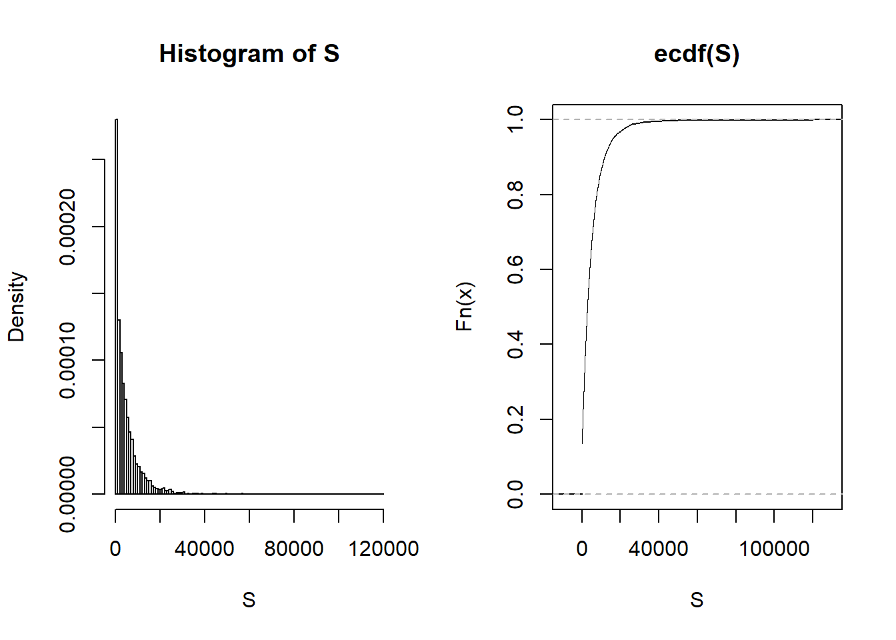

Chapter 1 Introduction to Loss Data Analytics
This file contains illustrative R code for computing analysis on the Property Fund data. When reviewing this code,you should open an R session, copy-and-paste the code, and see it perform. Then, you will be able to change parameters, look up commands, and so forth, as you go.This code uses the dataset PropertyFundInsample.csv
1.1 Case Study: Wisconsin Property Fund
1.1.1 Read in Property Fund Data
Insample <- read.csv("Data/PropertyFundInsample.csv", header=T, na.strings=c("."), stringsAsFactors=FALSE)
Insample2010 <- subset(Insample, Year==2010)A few quick notes on these commands:
read.csvreads a csv file and creates data frame from it, with cases corresponding to rows and variables to columns in the file.The assignment operator
<-is analogous to an equal sign in mathematics. The commandInsample <- read.csv("PropertyFundInsample.csv", header=T, na.strings=c("."), stringsAsFactors=FALSE)means we give the nameInsampleto the data read.The subset()function is used to select variables and observations. In this illustration, we selected observations from year 2010.
1.1.2 Claim Frequency Distribution
In 2010 there were 1,110 policyholders in the property fund. Table 1.1 shows the distribution of the 1,377 claims.
1.1.2.1 Property fund distribution for 2010
Table 1.1
library(pander)
Table<-as.data.frame(table(Insample2010$Freq))
names(Table)<-c("Number of Claims", "Frequncy")
pander(t(Table))| Number of Claims | 0 | 1 | 2 | 3 | 4 | 5 | 6 | 7 | 8 | 9 | 10 | 11 |
| Frequncy | 707 | 209 | 86 | 40 | 18 | 12 | 9 | 4 | 6 | 1 | 3 | 2 |
| Number of Claims | 13 | 14 | 15 | 16 | 17 | 18 | 19 | 30 | 39 | 103 | 239 |
| Frequncy | 1 | 2 | 1 | 2 | 1 | 1 | 1 | 1 | 1 | 1 | 1 |
The average number of claims for this sample was 1.24 (=1377/1110). See table 1.2 below.
Table 1.2
pander(summary(Insample2010$Freq))| Min. | 1st Qu. | Median | Mean | 3rd Qu. | Max. |
|---|---|---|---|---|---|
| 0 | 0 | 0 | 1.241 | 1 | 239 |
A few quick notes on these commands:
Many useful R functions come in packages and to use these functions you have to install them. One way to install a package is by using the command line
install.packages("<the package's name>"). In addition, to read more about a function you use the commandhelp("function name").The
panderfunction is used here to create nicer tables than regular R output. To use this function you need to download thepanderpackage. For the normal R output in the illustration above, use the command linesummary(Insample2010$Freq).- The
names()function is used to to get or assign names of an object . In this illustration, we assignedNumber of ClaimsandFrequencyto the two columns in the data frame . The
t()function is used to transpose a dataframe or a matrix.
1.1.3 Average Severity Distribution for 2010
Table 1.3 summarizes the sample distribution of average severity from the 403 policyholders; Figure 1.2 provides further information about the distribution of sample claims, showing a distribution that is dominated by this single large claim so that the histogram is not very helpful. Even when removing the large claim, you will find a distribution that is skewed to the right. A generally accepted technique is to work with claims in logarithmic units especially for graphical purposes; the corresponding figure in the right-hand panel is much easier to interpret.
Table 1.3
InsamplePos2010 <- subset(Insample2010, yAvg>0)
pander(summary(InsamplePos2010$yAvg))| Min. | 1st Qu. | Median | Mean | 3rd Qu. | Max. |
|---|---|---|---|---|---|
| 166.7 | 2226 | 4951 | 56332 | 11900 | 12922218 |
length(InsamplePos2010$yAvg)[1] 403Note: The length() function sets the length of a vector (list) or other objects.
1.1.4 Plot of average claims
Figure 1.2
par(mfrow=c(1, 2))
hist(InsamplePos2010$yAvg, main="", xlab="Average Claims")
hist(log(InsamplePos2010$yAvg), main="", xlab="Logarithmic Average Claims")
A few quick notes on these commands:
The
par(mfrow)function is handy for creating a simple multi-paneled plot.mfrowis a vector of length 2, where the first argument specifies the number of rows and the second the number of columns of plots.The
hist()computes a histogram of the given data values. You put the name of your dataset in between the parentheses of this function
1.2 Rating Variables
Earlier we considered a sample of 1,110 observations which may seem like a lot. However, as we will seen in our forthcoming applications, because of the preponderance of zeros and the skewed nature of claims, actuaries typically yearn for more data. One common approach that we adopt here is to examine outcomes from multiple years, thus increasing the sample size.
Table 1.4 shows that the average claim varies over time.
1.2.1 Average claims over time
Table 1.4
library(doBy)
T1A <- summaryBy(Freq ~ Year, data = Insample,
FUN = function(x) { c(m = mean(x), num=length(x)) } )
T1B <- summaryBy(yAvg ~ Year, data = Insample,
FUN = function(x) { c(m = mean(x), num=length(x)) } )
T1C <- summaryBy(BCcov ~ Year, data = Insample,
FUN = function(x) { c(m = mean(x), num=length(x)) } )
Table1In <- cbind(T1A[1],T1A[2],T1B[2],T1C[2],T1A[3])
names(Table1In) <- c("Year", "Average Freq","Average Sev", "Average Coverage","No. of Policyholders")
pander(Table1In)| Year | Average Freq | Average Sev | Average Coverage | No. of Policyholders |
|---|---|---|---|---|
| 2006 | 0.9515 | 9695 | 32498186 | 1154 |
| 2007 | 1.167 | 6544 | 35275949 | 1138 |
| 2008 | 0.9742 | 5311 | 37267485 | 1125 |
| 2009 | 1.219 | 4572 | 40355382 | 1112 |
| 2010 | 1.241 | 20452 | 41242070 | 1110 |
A few quick notes on these commands:
The
summaryBy()function provides summary statistics of a variable across different groups. You need to install thedoBypackage to use the command.The
cbind()combines vector, matrix or data frame by columns. The row number of the two datasets must be equal.The
c()function combines its arguments to form a vector.
For a different look at this five-year sample, Table 1.5 summarizes the distribution of our two outcomes, frequency and claims amount. In each case, the average exceeds the median, suggesting that the distributions are right-skewed.
1.2.2 Frequency and claims statistics of full data
Table 1.5
BCcov.div1000 <- (Insample$BCcov)/1000
t1<- summaryBy(Freq ~ 1, data = Insample,
FUN = function(x) { c(ma=min(x), m1=median(x),m=mean(x),mb=max(x)) } )
names(t1) <- c("Minimum", "Median","Average", "Maximum")
t2 <- summaryBy(yAvg ~ 1, data = Insample,
FUN = function(x) { c(ma=min(x), m1=median(x), m=mean(x),mb=max(x)) } )
names(t2) <- c("Minimum", "Median","Average", "Maximum")
t3 <- summaryBy(Deduct ~ 1, data = Insample,
FUN = function(x) { c(ma=min(x), m1=median(x), m=mean(x),mb=max(x)) } )
names(t3) <- c("Minimum", "Median","Average", "Maximum")
t4 <- summaryBy(BCcov.div1000 ~ 1, data = Insample,
FUN = function(x) { c(ma=min(x), m1=median(x), m=mean(x),mb=max(x)) } )
names(t4) <- c("Minimum", "Median","Average", "Maximum")
Table2 <- rbind(t1,t2,t3,t4)
Table2a <- round(Table2,3)
Rowlable <- rbind("Claim Frequency","Claim Severity","Deductible","Coverage (000's)")
Table2aa <- cbind(Rowlable,as.matrix(Table2a))
pander(Table2aa)| Minimum | Median | Average | Maximum | |
|---|---|---|---|---|
| Claim Frequency | 0 | 0 | 1.109 | 263 |
| Claim Severity | 0 | 0 | 9291.565 | 12922217.84 |
| Deductible | 500 | 1000 | 3364.87 | 1e+05 |
| Coverage (000’s) | 8.937 | 11353.566 | 37280.855 | 2444796.98 |
A few quick notes on these commands:
The
rbind()combines vector, matrix or data frame by rows. The column of the two datasets must be same.The
round()function rounds the values in its first argument to the specified number of decimal places (default 0).
Table 1.6 describes the rating variables considered in this chapter. To handle the skewness, we henceforth focus on logarithmic transformations of coverage and deductibles. To get a sense of the relationship between the non-continuous rating variables and claims, Table 1.7 relates the claims outcomes to these categorical variables.
1.2.3 Rating variable description
See table 1.6 below for variables and variable description.
Table 1.6
des <- read.table(header=TRUE, text='
Variable Description
"BCcov" "Total building and content coverage in dollars"
"Deduct" "Deductible in dollars"
"Entity Type" "Categorical variable that is one of six types: (Village, City, County, Misc, School, or Town)"
"AlarmCredit" "Categorical variable that is one of four types: (0%, 5%, 10%, or 15%), for automatic smoke alarms in main rooms"
"NoClaimCredit" "Binary variable to indicate no claims in the past two years"
"Fire5" "Binary variable to indicate the fire class is below 5. (The range of fire class is 0~10)" ')pander(des)| Variable | Description |
|---|---|
| BCcov | Total building and content coverage in dollars |
| Deduct | Deductible in dollars |
| Entity Type | Categorical variable that is one of six types: (Village, City, County, Misc, School, or Town) |
| AlarmCredit | Categorical variable that is one of four types: (0%, 5%, 10%, or 15%), for automatic smoke alarms in main rooms |
| NoClaimCredit | Binary variable to indicate no claims in the past two years |
| Fire5 | Binary variable to indicate the fire class is below 5. (The range of fire class is 0~10) |
1.2.4 Frequency and claims by rating variables
Table 1.7 shows claims summary by Entity Type, Fire Class, and No Claim Credit.
Table 1.7:
# Table 1.7
ByVarSumm<-function(datasub){
tempA <- summaryBy(Freq ~ 1 , data = datasub,
FUN = function(x) { c(m = mean(x), num=length(x)) } )
datasub1<- subset(datasub, yAvg>0)
tempB <- summaryBy(yAvg ~ 1, data = datasub1,
FUN = function(x) { c(m = mean(x)) } )
tempC <- merge(tempA,tempB,all.x=T)[c(2,1,3)]
tempC1 <- as.matrix(tempC)
return(tempC1)
}
datasub <- subset(Insample, TypeVillage == 1);
t1 <- ByVarSumm(datasub)
datasub <- subset(Insample, TypeCity == 1);
t2 <- ByVarSumm(datasub)
datasub <- subset(Insample, TypeCounty == 1);
t3 <- ByVarSumm(datasub)
datasub <- subset(Insample, TypeMisc == 1);
t4 <- ByVarSumm(datasub)
datasub <- subset(Insample, TypeSchool == 1);
t5 <- ByVarSumm(datasub)
datasub <- subset(Insample, TypeTown == 1);
t6 <- ByVarSumm(datasub)
datasub <- subset(Insample, Fire5 == 0);
t7 <- ByVarSumm(datasub)
datasub <- subset(Insample, Fire5 == 1);
t8 <- ByVarSumm(datasub)
datasub <- subset(Insample, Insample$NoClaimCredit == 0);
t9 <- ByVarSumm(datasub)
datasub <- subset(Insample, Insample$NoClaimCredit == 1);
t10 <- ByVarSumm(datasub)
t11 <- ByVarSumm(Insample)
Tablea <- rbind(t1,t2,t3,t4,t5,t6,t7,t8,t9,t10,t11)
Tableaa <- round(Tablea,3)
Rowlable <- rbind("Village","City","County","Misc","School",
"Town","Fire5--No","Fire5--Yes","NoClaimCredit--No",
"NoClaimCredit--Yes","Total")
Table4 <- cbind(Rowlable,as.matrix(Tableaa))pander(Table4)| Freq.num | Freq.m | yAvg.m | |
|---|---|---|---|
| Village | 1341 | 0.452 | 10645.206 |
| City | 793 | 1.941 | 16924.035 |
| County | 328 | 4.899 | 15453.206 |
| Misc | 609 | 0.186 | 43036.076 |
| School | 1597 | 1.434 | 64346.394 |
| Town | 971 | 0.103 | 19831.048 |
| Fire5–No | 2508 | 0.502 | 13935.421 |
| Fire5–Yes | 3131 | 1.596 | 41421.263 |
| NoClaimCredit–No | 3786 | 1.501 | 31365.085 |
| NoClaimCredit–Yes | 1853 | 0.31 | 30498.714 |
| Total | 5639 | 1.109 | 31206.155 |
Table 1.8 shows claims summary by Entity Type and Alarm Credit
Table 1.8:
ByVarSumm<-function(datasub){
tempA <- summaryBy(Freq ~ AC00 , data = datasub,
FUN = function(x) { c(m = mean(x), num=length(x)) } )
datasub1 <- subset(datasub, yAvg>0)
if(nrow(datasub1)==0) { n<-nrow(datasub)
return(c(0,0,n))
} else
{
tempB <- summaryBy(yAvg ~ AC00, data = datasub1,
FUN = function(x) { c(m = mean(x)) } )
tempC <- merge(tempA,tempB,all.x=T)[c(2,4,3)]
tempC1 <- as.matrix(tempC)
return(tempC1)
}
}
AlarmC <- 1*(Insample$AC00==1) + 2*(Insample$AC05==1)+ 3*(Insample$AC10==1)+ 4*(Insample$AC15==1)
ByVarCredit<-function(ACnum){
datasub <- subset(Insample, TypeVillage == 1 & AlarmC == ACnum);
t1 <- ByVarSumm(datasub)
datasub <- subset(Insample, TypeCity == 1 & AlarmC == ACnum);
t2 <- ByVarSumm(datasub)
datasub <- subset(Insample, TypeCounty == 1 & AlarmC == ACnum);
t3 <- ByVarSumm(datasub)
datasub <- subset(Insample, TypeMisc == 1 & AlarmC == ACnum);
t4 <- ByVarSumm(datasub)
datasub <- subset(Insample, TypeSchool == 1 & AlarmC == ACnum);
t5 <- ByVarSumm(datasub)
datasub <- subset(Insample, TypeTown == 1 & AlarmC ==ACnum);
t6 <- ByVarSumm(datasub)
datasub <- subset(Insample, AlarmC == ACnum);
t7 <- ByVarSumm(datasub)
Tablea <- rbind(t1,t2,t3,t4,t5,t6,t7)
Tableaa <- round(Tablea,3)
Rowlable <- rbind("Village","City","County","Misc","School",
"Town","Total")
Table4 <- cbind(Rowlable,as.matrix(Tableaa))
}
Table4a <- ByVarCredit(1) #Claims Summary by Entity Type and Alarm Credit==00
Table4b <- ByVarCredit(2) #Claims Summary by Entity Type and Alarm Credit==05
Table4c <- ByVarCredit(3) #Claims Summary by Entity Type and Alarm Credit==10
Table4d <- ByVarCredit(4) #Claims Summary by Entity Type and Alarm Credit==15pander(Table4a) #Claims Summary by Entity Type and Alarm Credit==00| Freq.m | yAvg.m | Freq.num | |
|---|---|---|---|
| Village | 0.326 | 11077.997 | 829 |
| City | 0.893 | 7575.979 | 244 |
| County | 2.14 | 16012.719 | 50 |
| Misc | 0.117 | 15122.127 | 386 |
| School | 0.422 | 25522.708 | 294 |
| Town | 0.083 | 25257.084 | 808 |
| Total | 0.318 | 15118.491 | 2611 |
pander(Table4b) #Claims Summary by Entity Type and Alarm Credit==05 | Freq.m | yAvg.m | Freq.num | ||
|---|---|---|---|---|
| Village | 0.278 | 8086.057 | 54 | |
| City | 2.077 | 4150.125 | 13 | |
| t3 | County | 0 | 0 | 1 |
| Misc | 0.278 | 13063.933 | 18 | |
| School | 0.41 | 14575.003 | 122 | |
| Town | 0.194 | 3937.29 | 31 | |
| Total | 0.431 | 10762.112 | 239 |
pander(Table4c) #Claims Summary by Entity Type and Alarm Credit==10| Freq.m | yAvg.m | Freq.num | |
|---|---|---|---|
| Village | 0.5 | 8792.376 | 50 |
| City | 1.258 | 8625.169 | 31 |
| County | 2.125 | 11687.969 | 8 |
| Misc | 0.077 | 3923.375 | 26 |
| School | 0.488 | 11596.912 | 168 |
| Town | 0.091 | 2338.06 | 44 |
| Total | 0.517 | 10194.094 | 327 |
pander(Table4d) #Claims Summary by Entity Type and Alarm Credit==15| Freq.m | yAvg.m | Freq.num | |
|---|---|---|---|
| Village | 0.725 | 10543.752 | 408 |
| City | 2.485 | 20469.514 | 505 |
| County | 5.513 | 15475.74 | 269 |
| Misc | 0.341 | 87020.878 | 179 |
| School | 2.008 | 85139.974 | 1013 |
| Town | 0.261 | 9489.613 | 88 |
| Total | 2.093 | 41458.312 | 2462 |